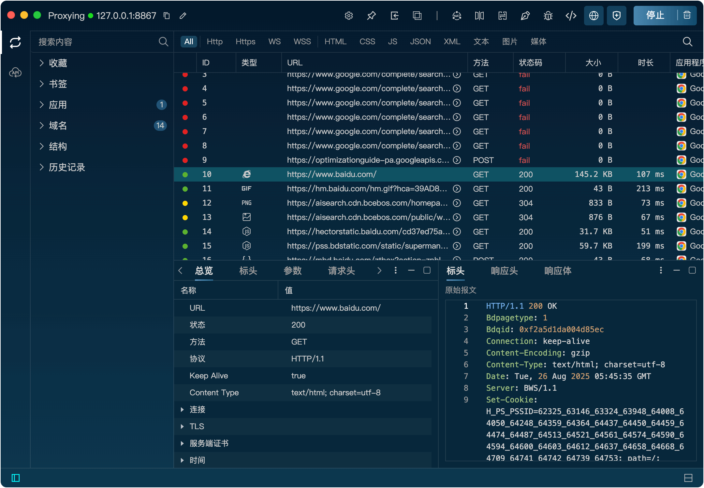

介绍
简介
Listen 是一款跨平台（windows/mac）的专业HTTP开发和调试工具，支持HTTP1、HTTP2协议，简单易用、功能强大、性能高效，帮助开发、测试、运维人员快速定位接口问题。
特性
Listen 提供了请求代理和请求模拟两个核心功能。请求代理即对请求进行抓包，并且可以通过规则修改发送和接收的数据。请求模拟可以对抓到的请求进行再次编辑和发送。
请求代理
请求代理采用经典的MITM代理方式进行流量分析，支持重写、脚本（JavaScript）、断点和重放等功能。
网关功能：对请求进行屏蔽
镜像功能：对域名进行映射
映射功能：可以将服务器目录映射到本地目录
重写功能：使用事先创建的规则对请求和响应进行拦截和修改
断点功能：对请求和响应进行中断并修改
脚本功能：编写JavaScript代码对请求和响应进行编程式修改
二级代理：将请求转发到其他服务器代理

请求模拟
请求模拟可以构造任意的 HTTP/HTTPS 请求（URL、Method、Header、Body），用来测试API接口，同时还支持API集合存储。